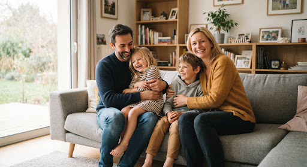
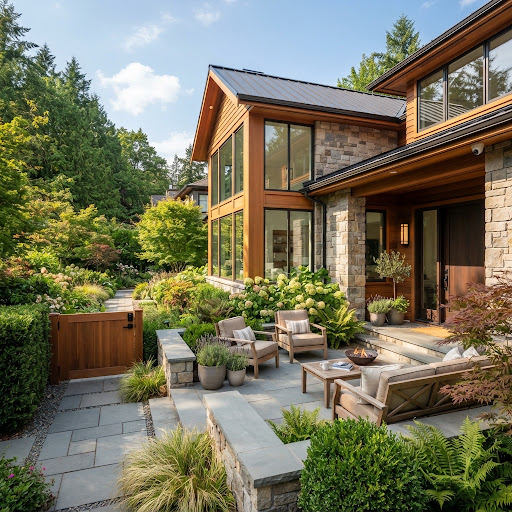
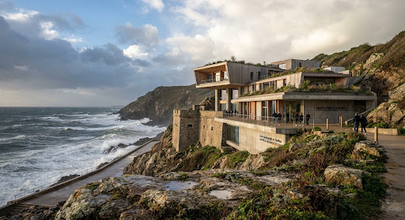
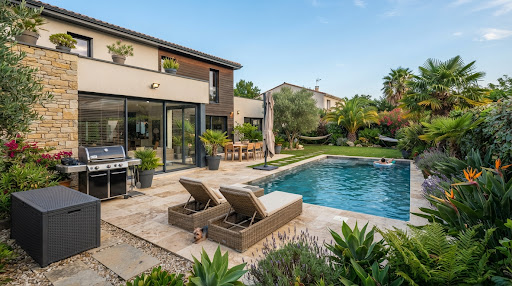
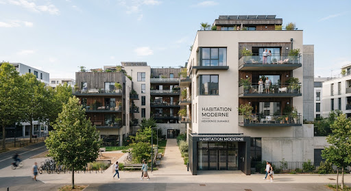

Sensibilisez le territoire avant la saison
Mairies et intercommunalités accompagnent les foyers avec un outil simple, un discours commun et un suivi des actions de prévention.
Échanger pour votre communeIA VigiRisque aide les collectivités et les assureurs à repérer les objets exposés sur un extérieur, à prioriser les gestes utiles et à partager un plan d'action clair avec chaque foyer.



IA VigiRisque est une solution de prévention cyclonique qui transforme une photo d'extérieur en décisions concrètes. Avant les alertes, les équipes territoriales et assurancielles peuvent sensibiliser les habitants, suivre les actions recommandées et partager un rapport lisible.
Voir nos engagements confianceUn parcours guidé pour transformer l'observation d'un jardin ou d'une terrasse en plan de prévention priorisé.
Mairies et intercommunalités accompagnent les foyers avec un outil simple, un discours commun et un suivi des actions de prévention.
Échanger pour votre communeProposez un parcours de prévention utile, un score compréhensible et un rapport PDF à conserver ou à transmettre.
Demander une démonstrationPhotographiez le jardin ou la terrasse, sans matériel particulier ni visite technique préalable.
Les éléments exposés (parasol, mobilier, pots) sont identifiés avec un niveau de confiance visible.
Une lecture synthétique sur 100 pour visualiser les progrès et les points à traiter en priorité.
Les bons gestes sont classés : immédiatement, dans les 24 heures, ou à anticiper.
Un document lisible pour garder une trace, informer un foyer ou faciliter le suivi d'équipe.
Parcourez le flux complet : photo, détection, plan d'action et rapport PDF. Les données affichées sont des exemples illustratifs.
Une vue d'ensemble de l'extérieur permet de lancer l'analyse sans visite préalable.

Chaque élément est accompagné d'une indication de risque et d'un niveau de confiance.
Un plan lisible pour savoir quoi faire maintenant et quoi prévoir ensuite.
Retrouvez le score, les observations et les actions recommandées dans un document PDF.
Évaluation de l'extérieur
IA VigiRisque donne aux équipes un support concret pour sensibiliser, accompagner et suivre les actions avant la saison cyclonique — en particulier sur les territoires exposés en outre-mer et sur le littoral.
Échanger sur votre projetBonjour Camille
Votre plan de préventionDes réponses claires pour les équipes qui évaluent la solution, les habitants accompagnés et les partenaires assureurs.
IA VigiRisque est une solution numérique de prévention cyclonique. À partir d'une photo de l'extérieur d'une habitation, elle aide à repérer les éléments exposés, calcule un score de résilience et propose un plan d'action priorisé, exportable en PDF.
Elle s'adresse aux collectivités (mairies, intercommunalités), aux assureurs et aux courtiers qui souhaitent sensibiliser et accompagner les habitants avant la saison cyclonique, notamment en outre-mer et sur les territoires exposés.
Les données sont hébergées en France. Les photos sont supprimées après analyse, sauf contribution facultative avec consentement révocable. Les visages, plaques et localisations précises sont anonymisés.
Non. IA VigiRisque fournit un éclairage et un plan d'actions concrètes. Le niveau de confiance de chaque détection est affiché. L'outil n'est pas un diagnostic technique certifié.
Utilisez le bouton « Demander une démonstration » ou écrivez à contact@vigirisques.fr. Nous vous recontactons pour présenter le parcours adapté à votre organisation.

Parlons de votre territoire ou de votre portefeuille d'assurés. Une démonstration suffit pour démarrer.